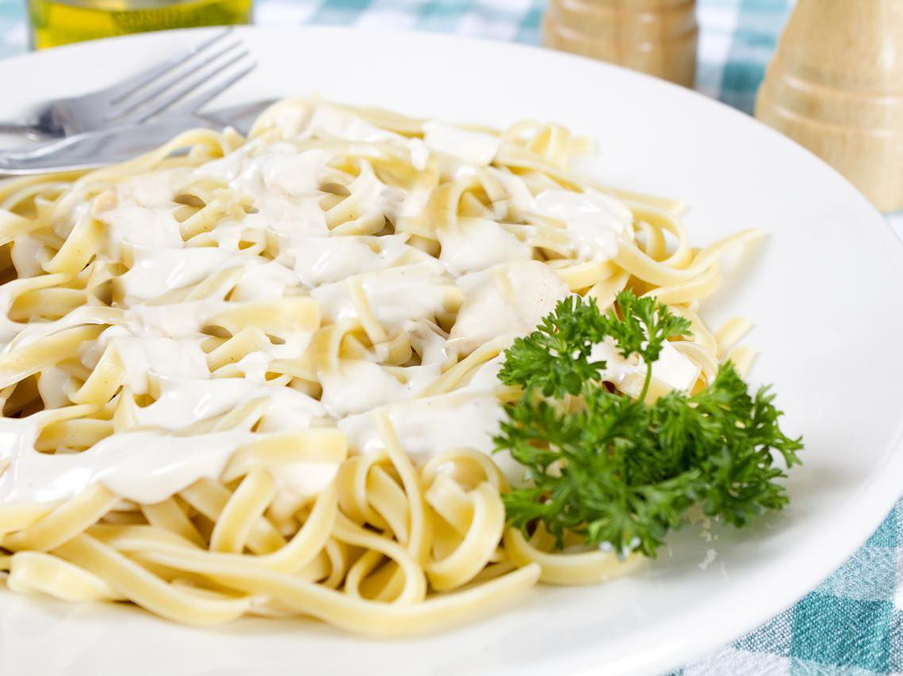

Seafood Fettucini

Description
A good, creamy sauce over fettuccini noodles.
You can use shrimp, tuna, mock crab, or
whatever. Tastes great, and isn't made with
cream!
Ingredients:
- 4 tablespoons butter
- 1 large onion, chopped
- 4 cloves garlic, minced
- 3 tablespoons all-purpose flour
- 2 cups milk
- 1 (10.75 ounce) can condensed cream of mushroom soup
- 4 ounces fresh shrimp, peeled and deveined
- 4 ounces crabmeat
- 8 bay scallops, raw
- 16 ounces dry fettuccini noodles
Steps:
- Bring a large pot of lightly salted water to a boil. Add pasta and cook for 8 to 10 minutes or until al dente; drain.
- In a large saute pan, melt butter and saute onions and garlic until onions are almost translucent.
- Stir in flour, coating all of the onions well. Gradually pour in milk, stirring constantly. Stir in mushroom soup and seafood.
- Cook for 10 minutes or until shrimp are pink and scallops are opaque. Serve over pasta.